Apartamento Santa Teresa
Projeto de interiores desenvolvido pela Tamiris Bibbó em sua própria casa, em busca de funcionalidade com charme. A proposta mistura cores com detalhes clássicos, maximizando o espaço e a entrada de luz natural.
Ficha técnica
- Área: 130m²
- Local: Belo Horizonte - MG
- Ano: 2022
- Tipo: Interiores residenciais
- Fotografias: Ana Freitas
Galeria
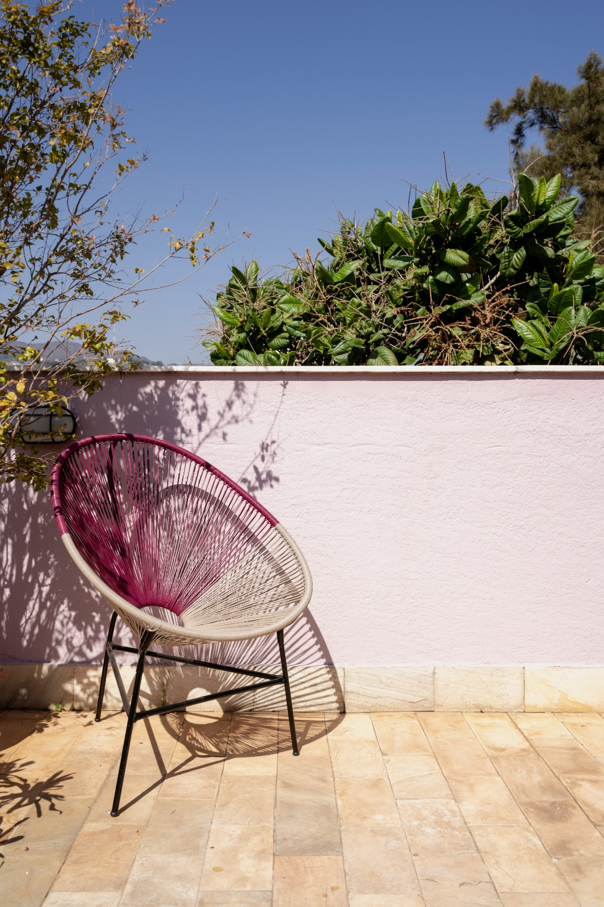
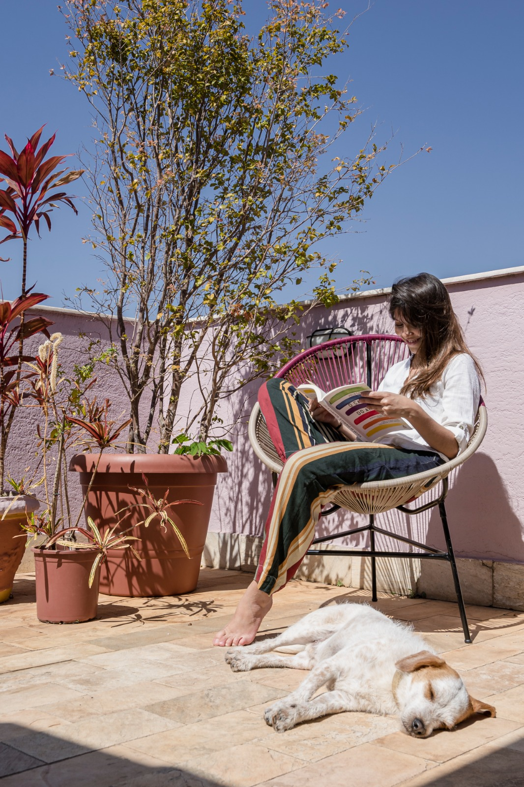
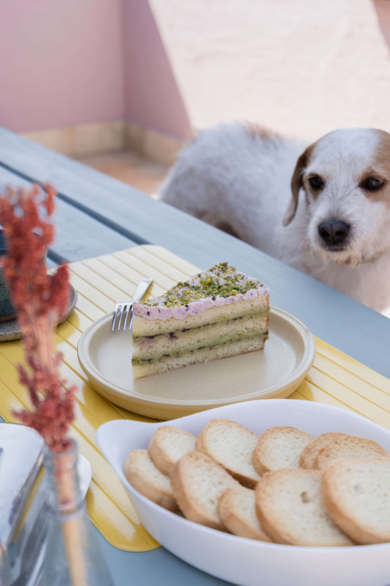
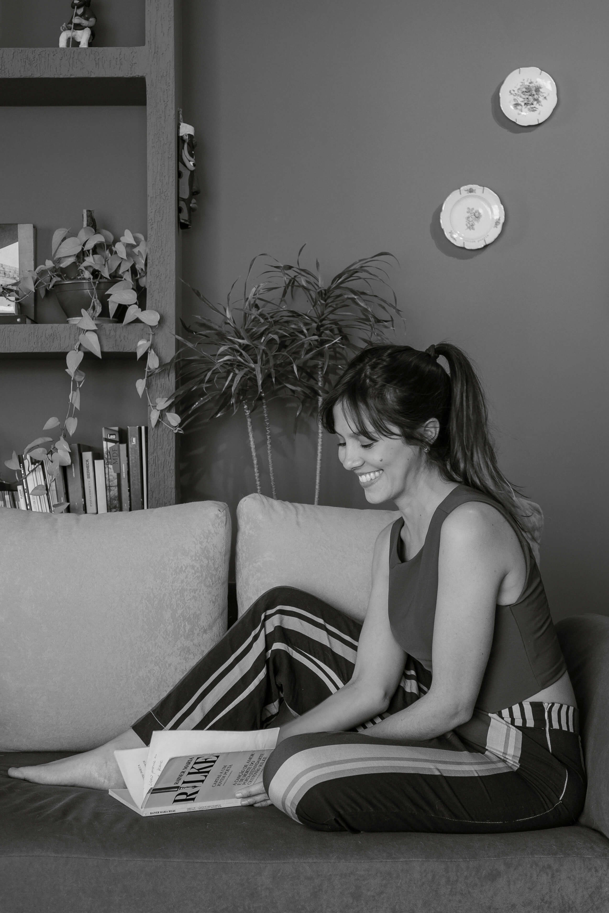
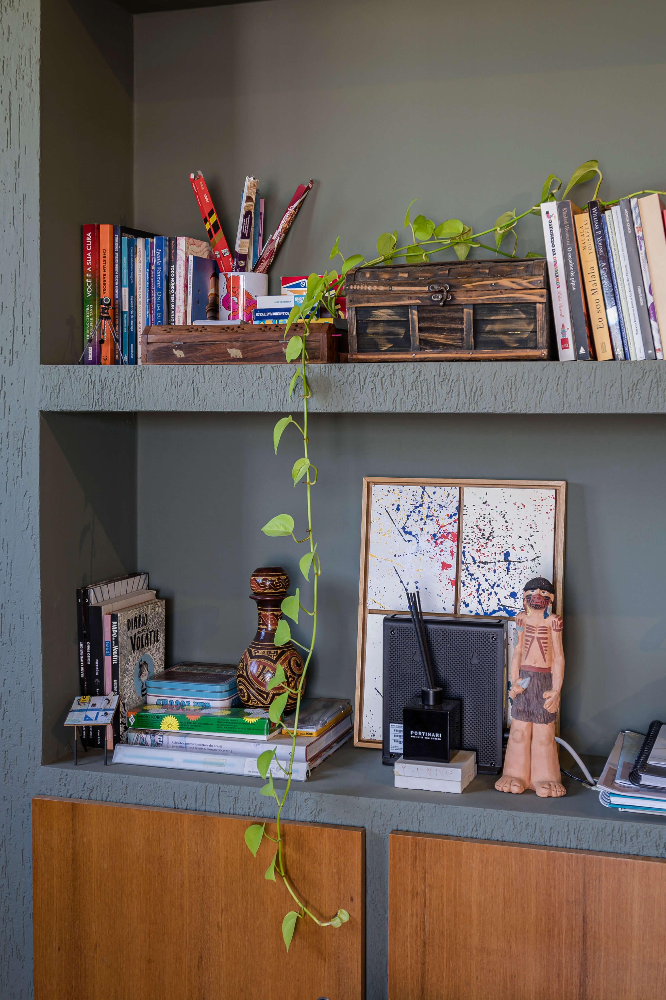
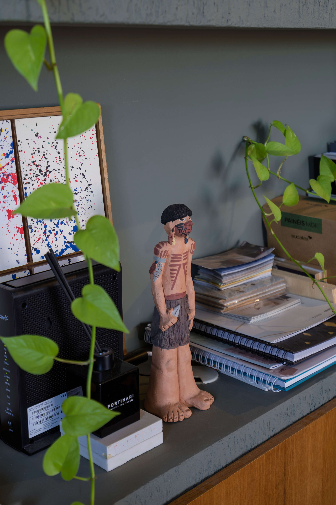
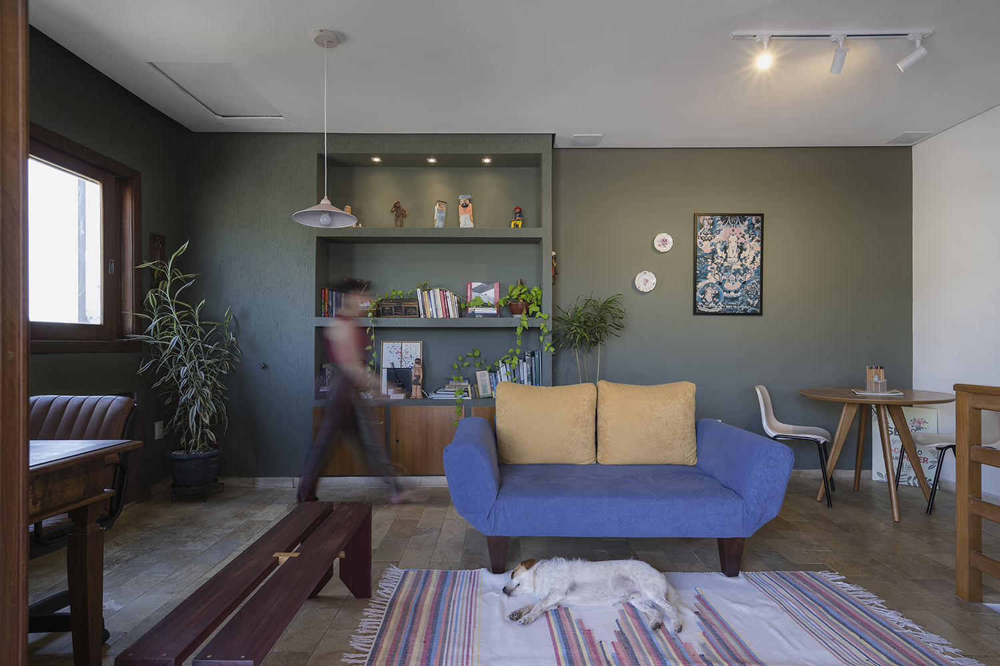
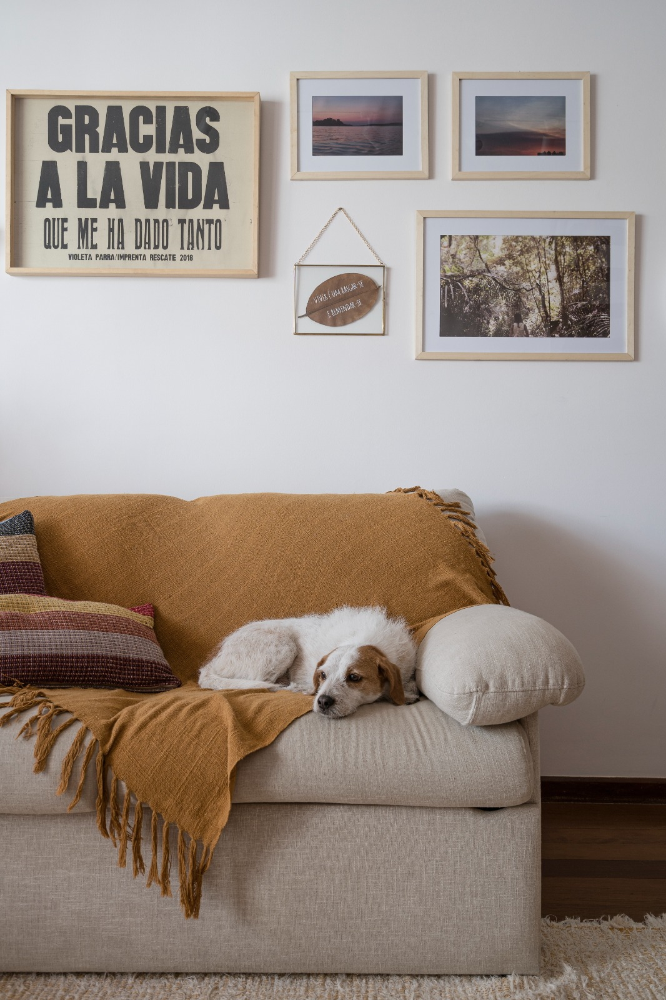
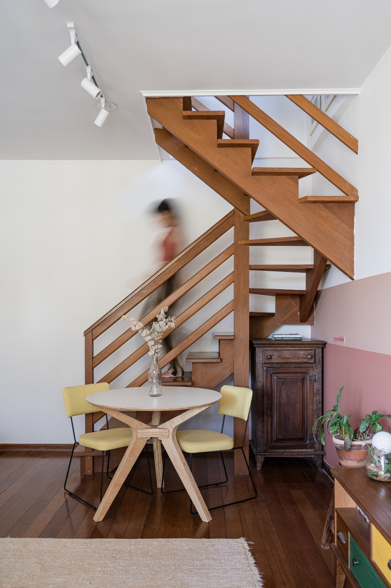
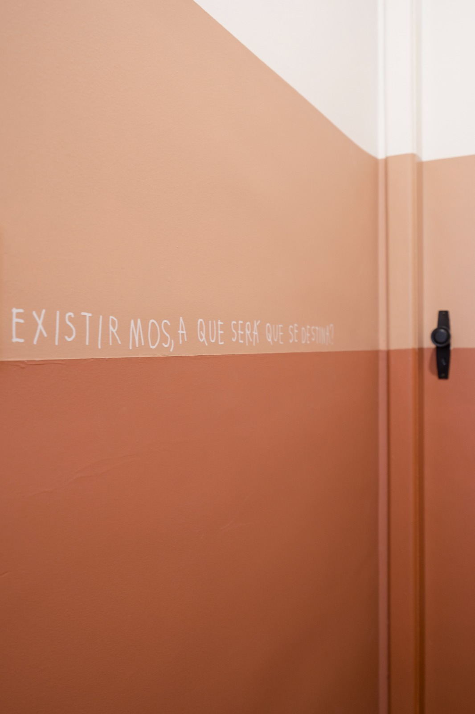
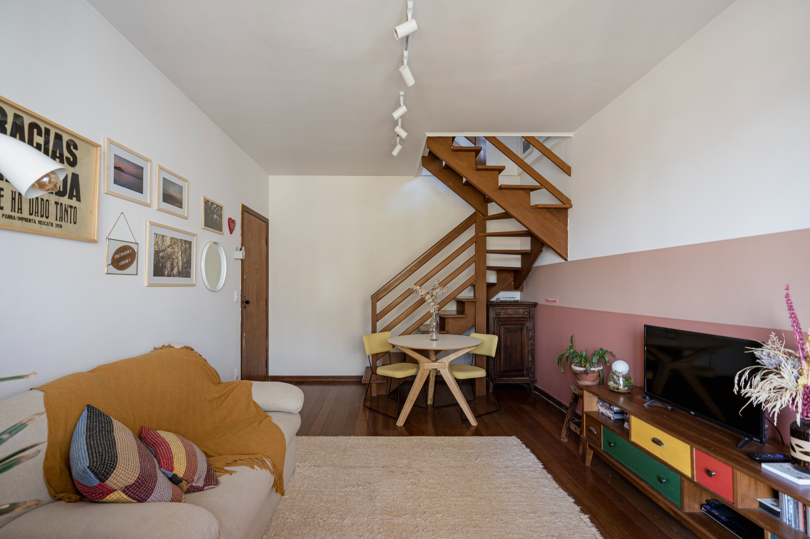
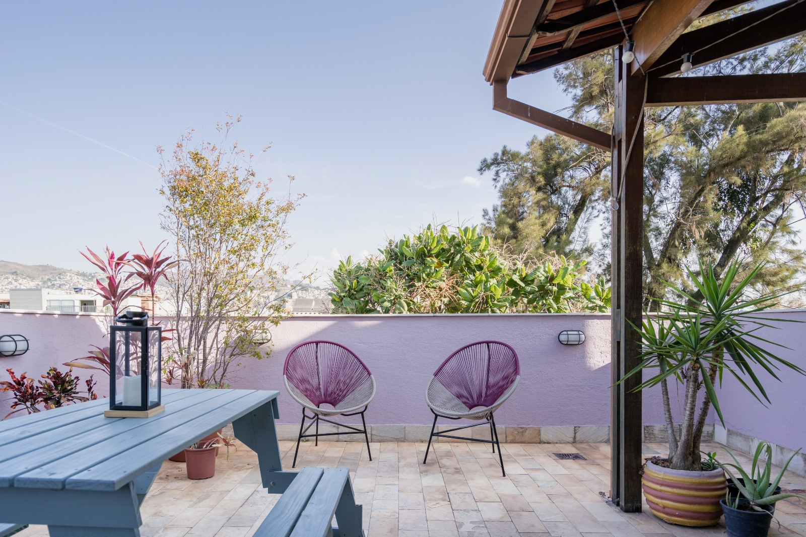